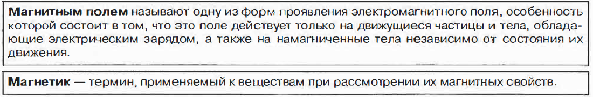
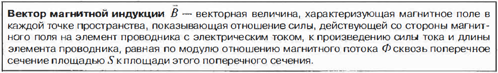
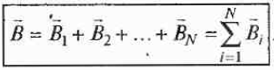
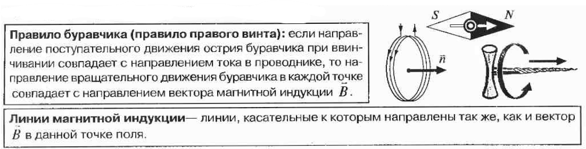
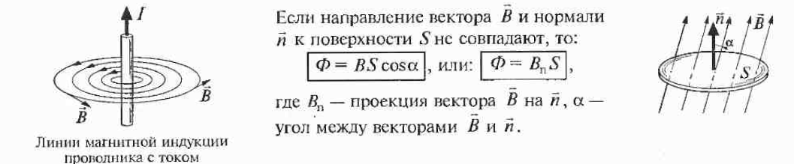
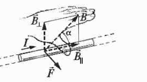
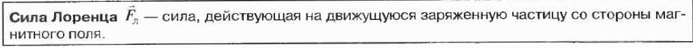
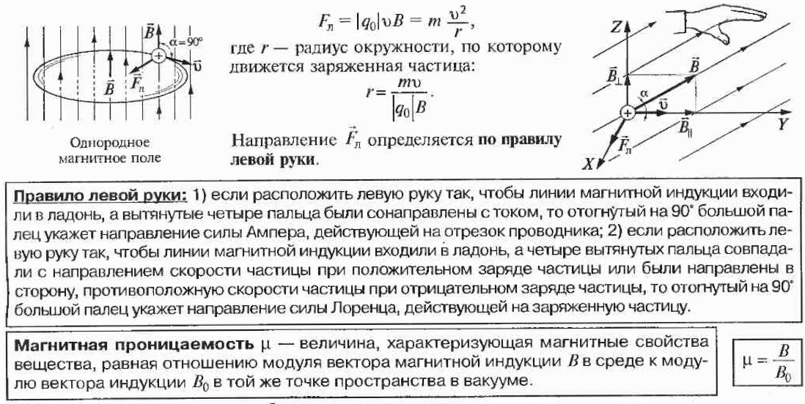
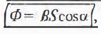

◆ Все тела при внесении магнитное поле создают собственное магнитное поле, то есть намагничиваются. Магнитные свойства вещества определяются магнитными свойствами его частиц. По магнитным свойствам магнетики разделяют на три группы: диамагнетики, парамагнетики и ферромагнетики.
◆ Магнитное поле создается проводниками с токами, движущимися электрически заряженными частицами и телами, постоянными магнитами и переменным электрическим полем. Магнитное поле проявляет себя по действию на движущиеся заряженные частицы и тела, на контур с током и на тела, обладающие магнитным моментом (намагниченные) независимо от того, движутся они или нет.
◆ Количественно магнитное поле характеризуется магнитной индукцией.

Единица магнитной индукции в СИ - тесла ([B] = Тл).
За единицу магнитной индукции принята магнитная индукция, при которой сквозь поперечное сечение площадью 1 м2, перпендикулярное направлению потока, проходит магнитной поток 1 Вб.
◆ Магнитное поле подчиняется принципу суперпозиции: если в данной точке пространства различные источники создают магнитные поля, индукции которых В1, В2, то результирующая индукция поля в этой точке равна: .

◆ Линии магнитной индукции всегда замкнуты, что характеризует вихревое поле - поле с замкнутыми силовыми линиями. Магнитное поле - вихревое поле.

◆ Закон Ампера: модуль, силы F, действующей на малый отрезок проводника, по которому течет ток I, со стороны магнитного поля с индукцией В, составляющей с элементом тока угол, а, равен:
Направление F (силы Ампера) определяется по правилу левой руки.


◆ Магнитная проницаемость - безразмерная величина.
◆ У диамагнетиков µ < 1, у парамагнетиков µ > 1, у ферромагнетиков µ » 1.
◆ Магнитное поле является не потенциальным, то есть работа магнитного поля по перемещению заряда по замкнутому контуру не равна нулю.
◆ В магнитной цепи роль, аналогичную силе тока в электрической цепи, играет магнитный поток Ф.
 где а - угол между вектором нормали n и направлением вектора.
Такое определение верно для однородного поля.
Единица магнитного потока в СИ - вебер ([Ф] = Вб).
За единицу магнитного потока принят такой магнитный ноток, при убывании которого до нуля в сцепленной с ним электрической цепи сопротивлением 1 Ом сквозь поперечное сечение проводника проходит количество электричества 1 Кл. Магнитный поток. в 1 Вб создается однородным магнитным полем с индукцией 1Тл через поверхность площадью 1м2, расположенную перпендикулярно вектору магнитной индукции.